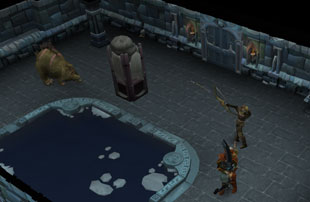
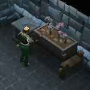

")
Dungeoneering - Complexity 5 and 6
Introduction | What to Expect in Complexity Level 5 and 6 | Farming Seeds | Herblore | Thieving | Summoning
Introduction

What to Expect in Complexity Levels 5 and 6
The final stage of complexity allows you to use the following further skills and techniques: Farming seeds, Herblore, Summoning and Thieving. The following skills are also tested at complexity level 5 and 6:
- Combat
- Cooking
- Firemaking
- Fishing
- Woodcutting
- Making weapons
- Mining
- Runecrafting
- Farming textiles
- Hunter
- Making armour
The smuggler now offers the full range of stock, and you will encounter both skill doors and challenge rooms on these floors.
Farming Seeds

Farming these new plants follows the same rules and methods as for Farming textiles.
For more information on Farming in Daemonheim, click here.
For more information on Farming in RuneScape, outside of Daemonheim, click here.
Herblore

Most of the items you need to make potions can be purchased from the smuggler, and you can also find them and the final ingredients you will need on some levels of the dungeon or receive them as drops from the creatures you encounter. Click here for a full list of the potions you can make and their effects.
For more information on Herblore in Daemonheim, click here.
For more information on Herblore in RuneScape, outside of Daemonheim, click here.
Summoning

For more information on Summoning in Daemonheim, click here.
For more information on Summoning in RuneScape, outside of Daemonheim, click here.
Thieving

Note that you do not need a lockpick to pick any locks in Daemonheim.
For more information on Thieving in Daemonheim, click here.
For more information on Thieving in RuneScape, outside of Daemonheim, click here.
Click here to view the Dungeoneering FAQ

More articles in
Dungeoneering
|
|
|
Further Help
If this article does not help you, you may find the following sections of the RuneScape site helpful:
|
|